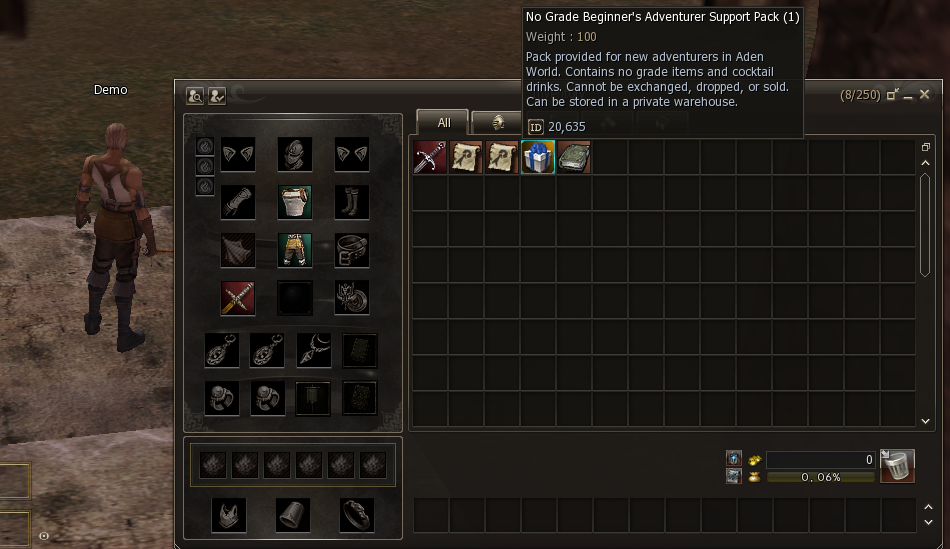
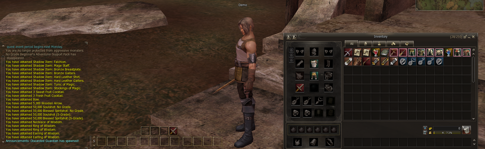
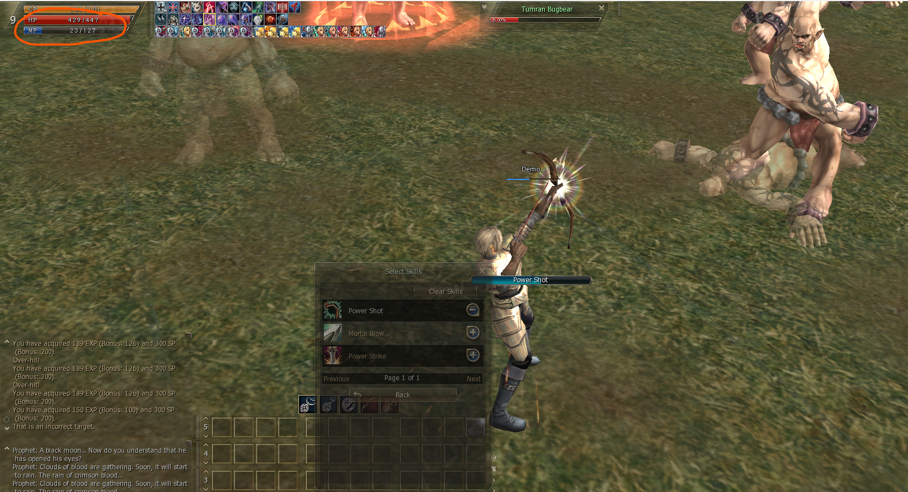
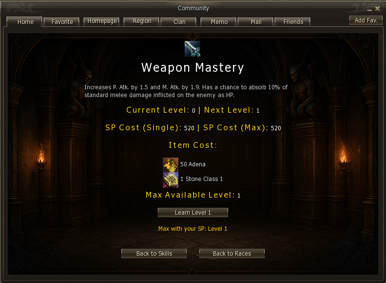

Getting Started
Connect, create your character, and take your first steps in Kairos.
Download the Client
Get the latest Kairos client from the official download page and verify the files before running the launcher.
Use the recommended client version to avoid compatibility issues with custom server scripts.
Create Your Account
No registration required — your account is created automatically the first time you log in. Simply enter a username and password in the launcher and your account is ready.
Connecting to the Server
Download and apply the full client patch before launching. The latest patch is always available in the dedicated Discord channel:
Get the latest patch from the Kairos Discord — #patch-download channel and apply it to your client folder before connecting.
First Steps In-Game
Once your character is created you will spawn in the No-Grade Zone — the starting area designed for new players. Follow the steps below to gear up and get into action fast.
Step 1 — Use the Free Buffer
Before doing anything else, open the
Community Board Buffer
(Alt+B → Buffer) and apply your buff scheme.
The Buffer is free — no NPC hunting required. It gives you a full set of combat and support buffs
that make a significant difference even at starter level.
See the Buffer guide to learn how to build and save your own scheme.
Step 2 — Claim Your Beginner Pack
Every new character receives a Beginner Pack in their inventory. Open it to receive your starting equipment and consumables.

Step 3 — Your Starting Items
Unpacking the Beginner Pack fills your inventory with everything you need to start fighting:
- Starter gear appropriate for your class
- Blue Cocktail — grants a set of support buffs
- Red Cocktail — grants a set of combat buffs
- Miscellaneous consumables to sustain early grinding

Use the Blue and Red Cocktails before heading into combat — they act as extra buff layers on top of your Buffer scheme and wear off over time.
Step 4 — Equip Your Gear
Open your inventory (Alt+B or I), right-click each gear piece to equip it.
Make sure your weapon and armor are on before engaging any enemies.
Step 5 — Start Hunting with Auto Play
Kairos includes a built-in Auto Play system. Type .play in chat to open
the Auto Play modal and configure your hunting behaviour — target selection, skill rotation, and looting.

See Commands — .play for the full list of Auto Play options and toggles.
Quick Checklist
- Open
Alt+B→ Buffer and apply your buff scheme. - Claim and unpack the Beginner Pack from your inventory.
- Use both Cocktails (Blue & Red) for extra buffs.
- Equip all gear pieces from the pack.
- Type
.playand configure Auto Play to start grinding.
With buffs active, gear equipped, and Auto Play running you're set to progress through the No-Grade Zone and beyond.
Mana Issue — We Have a Fix
Once you start using skills to farm you'll quickly run into mana problems. Potions are expensive at this stage — but don't worry, you don't need them.
The fix is to head into the MultiSkill system (Alt+B → MultiSkill),
navigate to the Orc class beginner skills, and learn the
Weapon Mastery skill. This passive will keep your mana regenerating
fast enough to sustain skill-based farming without any potions.

Alt+B → MultiSkill. Find the Orc class beginner skills section.

After learning Weapon Mastery from MultiSkill you can farm freely with skills — no mana potions needed. See Community Board — MultiSkill for the full system guide.